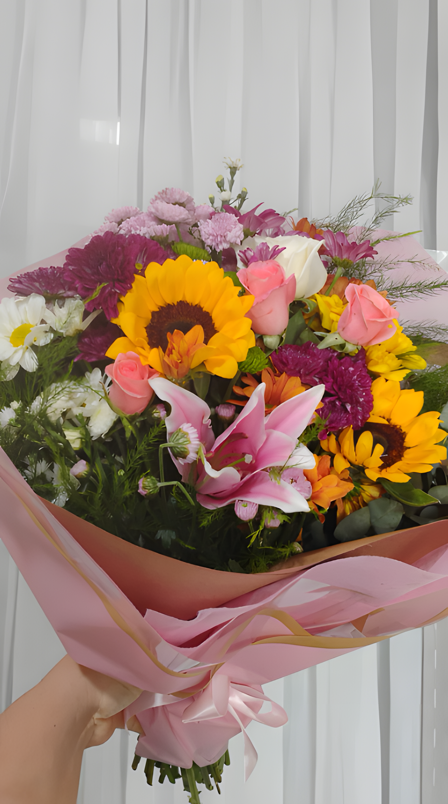

Coleção Premium • Floricultura Recife
Buquê Aniversário
O Buquê Aniversário é um presente encantador para celebrar o dia especial de alguém querido. Este buquê apresenta rosas vermelhas, densamente arranjadas e envoltas em um tecido de malha de cor clara, possivelmente branco ou creme. As rosas exibem pétalas frescas e vibrantes, com um gradiente de vermelho intenso e folhas verdes entre as flores. A elegante apresentação inclui uma fita rosada que arremata este belo arranjo com sofisticação.